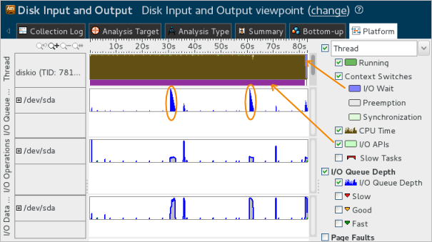

You ran the sample
diskio application in the system cache mode enabled with
the option
-m c. In this mode, the application asynchronously
writes records (16 Byte) to the output file, relying on system file cache.
You ran the sample
diskio application in the system cache mode enabled with
the option
-m c. In this mode, the application asynchronously
writes records (16 Byte) to the output file, relying on system file cache.
When the Disk Input and Output analysis is complete, the Intel® VTune™ Amplifier opens the result in the Disk Input and Output viewpoint.
For the analysis of the input/output-bound applications, the metrics summary at the top of the Summary window includes the I/O Wait Time metric that shows the amount of time when threads were in the I/O Wait state while there were idle cores on the system. For the diskio application in the system file cache mode, the I/O Wait time is very small, which typically means that the application is not I/O-bound.

You see that the sample application spent most of the time executing on the CPU with the CPU Time equal to 80.537 seconds.
To better understand the reason for the high CPU Time, switch to the Platform window:

The diskio thread shows the intensive usage of the CPU time (brown graph) and I/O API calls (tasks in purple). Since disk I/O operations are executed in parallel with CPU operations, the I/O overhead is small and mostly affects the last part of application execution when the rest of I/O operations are waited. The data processing in the system file cache starts only when the number of data in the cache grows big (see the peaks in the I/O Queue).
To minimize the CPU usage and effectively use the I/O device, consider running the application in a mode combining the usage of the system cache and user buffer.
Recap
You ran the Disk Input and Output analysis for the sample application interacting with the I/O device via system file cache and identified that in this mode the application has a high CPU Time overhead and does not use the I/O device effectively.